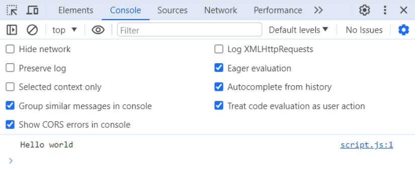
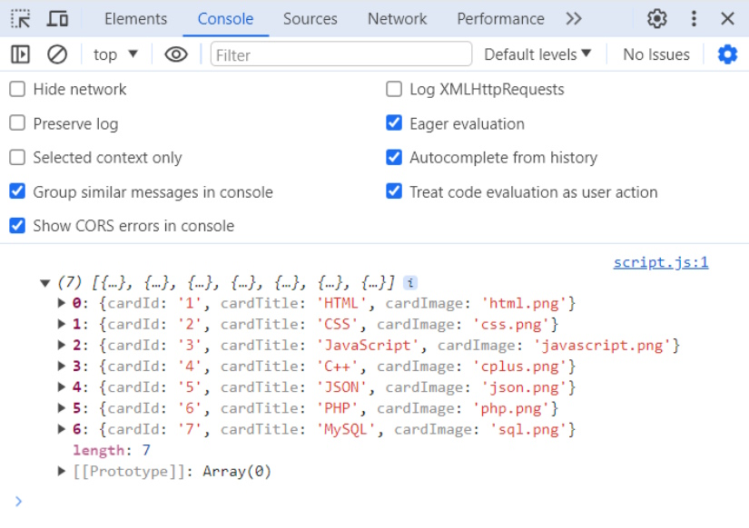

Stap 1: Opstart van project
Om ons spel te coderen, heb je Visual Studio Code nodig. Het programma kan je hier downloaden.
De memory game zullen we maken met HTML, CSS en Javascript. Nog geen kennis van programmeren? Geen probleem! We leggen het hieronder stap voor stap uit. Download alvast de nodige bestanden hier.
Mappenstructuur
Download hier het start structuur. Je vind hierin 4 mappen: een CSS, een data een fonts en een images folder, en een "index.html" bestand.
Bestanden toevoegen doe je door over de balk met bestanden te hoveren en op het ""-icoontje te klikken. Folders toevoegen doe je door op het ""-icoontje te klikken.
- Maak in de css-folder een nieuwe file genaamd "main.css". Hier komt alle code in om de website te stijlen.
- Voeg een nieuwe folder toe genaamd "script". Zorg ervoor dat deze folder op dezelfde plaats staat als de andere folders.
- Maak in de nieuwe folder "script" een bestand aan met de naam "script.js". Hier zal alle logica komen; van de kaarten die geïnjecteerd worden naar de HTML tot het controleren van twee gelijke kaarten.
Als dit allemaal goed is verlopen, zal je deze mappenstructuur hebben:
Extenties
Via Visual Studio install je een extentie. Klik op
in het linker balk, zoek dan naar "Live Server" en
klik op "Install". Met deze extentie zal je live je app tot leven zien
komen.
Klik nu op "Go live" rechts onderaan op je scherm.
Je krijgt een blanco pagina te zien. Hier zal jouw memory game
tevoorschijn komen.
Stap 2: Let the coding begin!
HTML
Net zoals een Word document eerst tekst nodig heeft vooraleer je stijlen toevoegd, doen wij ook hetzelfde met coderen. HTML(Hyper Text Markup Language) Is vooral de structuur bepalen van hoe alles gezet wordt van titels, afbeeldingen en texten.
In het bestand typen we ! daarna klikken we op tab (de pijltjes die dit doen ). Normaal zou je dan volgende code zien.
Deze code gaan wij dan aanpassen zodat het wat meer lijkt op onderstaande code. De code kan je hieronder kopiëren en in jouw bestand plakken.
Als alles goed ging zien wij volgend resultaat. Bovenaan staat de logo.
Daarna komt de titel en de namen van de makers, hier kan je jouw naam
invullen.
Op het einde staat er één kaart zonder opmaak. Geen nood dit zal in het
volgend stukje opgelost worden.
CSS
Nu zullen we wat styling aan onze html bestand. Dit doen we door het gebruiken van een CSS-bestand. CSS staat voor 'Cascading Style Sheets'.
Als 'main.css' niet zou werken, of deze perongelijk verwijderd wordt, wordt de styling van 'reset.css' toegepast. Dit is ee document die gegeven wordt van Arteveldehogeschool.
Nu zullen we zelf onze eigen stijling toevoegen. Kopieer onderstaande code, en voeg deze toe aan 'main.css'. Onder de code vind je nog even wat uitleg van belangrijke stukken code.
- De font 'Roboto' wordt geïmporteert via een font-face zodat we deze kunnen gebruiken.
-
Er worden enkele aanpassingen aan de body van de website gemaakt.
- We verwijderen de ruimte boven en onder de website, en zorgen dat alles in het midden staat via 'auto' toe te voegen bij margin.
- We geven aan dat er geen horizontale scroll bar aanwezig moet zijn via 'overflow-x'.
- Via 'background-color' en 'color' veranderen we de kleuren van de achtergrond en de lettertype.
-
In de HTML voegde je een simpele boven navigatie toe binnenin de tags
'nav'. Hieraan geef je ook stijling via CSS.
- De logo heeft een bepaalde breedte. De hoogte wordt hierdoor vanzelf berekend.
- Door de display aan te passen naar 'flex' en 'justify-content: space-around' toe te voegen, springen de elementen binnen de 'nav'-tag naast elkaar en worden ze uit elkaar geduwd.
- De 'p'-tag binnen de 'div' tag wordt gecentreerd. Dit zijn de namen rechts vanboven.
-
Daarna geven we styling aan de kaarten, en de container waarin de
kaarten staan. Zo voeren we volgende aanpassingen uit.
- Via 'grid' geven we aan dat de kaarten naast elkaar moeten komen, dit telkens met 6 op een rij.
- Er word enkele stijling gegeven aan een kaart, zoals de kleur, de hoeking van de rand en het centreren van de content binnenin met display, justify-content en align-items.
- De kaart krijgt een klik-cursor als er over een kaart 'gehovered' wordt.
- De afbeelding in een kaart krijgt een breedte en hoogte. Deze wordt telkens 20% van de bovenkant van de kaart gepositioneerd.
- De titel op de kaarten krijgen ook styling. Deze krijgen een zwarte font kleur, een bepaalde font grootte, staan gespositioneerd 215px van de boven van de kaart en worden gecentreerd.
- De resterende CSS wordt vooral gebruikt om de kaarten om te draaien.
Javascript
Data
Maak in de folder "data" een bestand aan met de naam "cardData.js". Voeg onderstaande data toe aan "cardData.js". De const 'cards' is een array. Een array is altijd omgeven door vierkante haken "[ ]" en is een collectie van items of objecten. Onze array is een collectie van objecten. Elk object besschrijft de id (cardId), afbeeldingslink (cardImage) en titel (cardTitle) van een card. Een object herken je aan de accolades "{ }" die errond staan.
Random cards genereren
Eerst linken we het databestand en het Javascript-bestand in ons html-bestand. Een standaardnaam voor een Javascript-bestand is 'script.js'.
Open "script.js" en schrijf de volgende code in dit bestand.
Open nu in je applicatie je console. Dit doe je op windows door Shift + CTRL + J in te duwen op Microsoft of Shift + ⌘ + J op MacOS.
Zo krijg je "Hello world" in de console te zien.
Vervang de console.log('Hello world') door console.log(cards). Je code ziet er nu zo uit:
In de console zie je nu de kaartobjecten die we eerder hebben aangemaakt. Je kan dus in script.js aan de data in cardData.js omdat je deze scripts in je index.html hebt gelinkt.
Nu gaan we de cards die we eerder hebben gemaakt genereren aan de hand van onze data in cardData.js. We verplaatsen de card HTML nu naar een Javascript functie.
In de functie generateHTMLForCards mappen we over de array cards en maken we voor elk object in de array een card element aan. Onze HTML plaatsen we tussen template literals. Dit zijn schuine, enkele haakjes die het toestaan om Javascript te gebruiken binnen HTML.
Geef het resultaat van deze functie weer in de console:
In de console krijg je nu de html van al de cards te zien. De cardId, cardImage en cardTitle zijn nu ingevuld met de informatie uit cardData.js.
Nu moeten we onze cards nog genereren zodat ze zichtbaar worden in de applicatie. Om dit te doen zullen we de code die we net gemaakt hebben aanpassen.
Via de getElementById methode haal je het element op met de klasse 'all-cards'. Door de methode innerHTML op dit $cardContainer element te gebruiken, kan je de HTML die we in de generateHTMLForCards functie gemaakt hebben binnen de div met klass 'all-cards' plaatsen.
Tenslotte roep je de functie generateUIForCards() op om deze tot uiting te brengen.
Nu zal je de gegenereerde kaartjes zien.
Nu willen we de kaarten nog willekeurig kunnen genereren.
Om dit te doen maken we twee functies aan. In randomiseCards maken we een functie die de volgorde binnen een array willekeurig maakt. In generateCards zullen we de array cards aanpassen zodat deze willekeurig is en elke kaart twee keer bevat.
Maak in randomiseCards gebruik van een for loop. Hierdoor kan de code over elk element in de array gaan en de index veranderen door een willekeurige index.
Nu kan je in generateCards de functie randomiseCards gebruiken om de volgorde van de card array willekeurig te maken. Dit doe je door de cards array mee te geven aan de randomiseCards functie. Hierna gebruik je de slice methode om de array 6 elementen lang te worden. Wanneer je totalCards nu logt, krijg je een array van 6 elementen in een willekeurige volgorde terug.
Omdat je in memory op zoek moet naar twee dezelfde kaarten, moet je nu de objecten in de array verdubbelen. Dit kan je doen aan de hand van een flatMap.
Hierna gebruik je de randomiseCards functie op de totalCards zodat de 12 objecten in een willekeurige volgorde gezet worden.
Nu kan je de generateCards functie gebruiken in de generateUIForCards functie om een array van 12 objecten te maken die aan de generateHTMLForCards functie meegegeven kan worden.
Nu ziet je code er zo uit:
Nu schrijven we de logica om te controleren of twee aangeklikte kaarten gelijk zijn aan elkaar. Maak een functie 'checkCards()' aan, tussen de functie 'generateHTMLForCards(cards) en 'generateUIForCards()'. Eerst moeten we dus de kaarten aanklikbaar maken, dit doen we door alle kaarten die in de HTML zitten te overlopen (dit noemt men itereren) en aan elke kaart een event listener toe te voegen. Dit doet exact wat het zegt, het 'luistert' voor events. Je code zal er zo uitzien:
Telkens als je op een kaart klikt, zal je nu 'Card clicked' in je console zien.
In de CSS hebben we een klasse 'flipped' toegevoegd. Dit voegen we toe en verwijderen we telkens als we op de kaart klikken. Vervang 'console.log("Card clicked");' door onderstaande code:
Om te weten of er 2 kaarten aangeklikt zijn, slaan we de aangeklikte kaarten op in een array. Een array is een lijst van gegevens/waardes. Om een array te gebruiken, maken we er eerst één aan. Later zullen we ook een counter nodig hebben. Deze voegen we ook al toe. Kopieer onderstaande code toe onder de constante $allCards:
Het voornaamste verschil tussen een 'let' en een 'const' is dat een 'let' waarde aangepast kan worden na het aanmaken. Een 'const' waarde blijft constant.
Voor elke kaart die geklikt wordt, 'pushen' we deze in de array. Dus onderstaande code voeg je toe onder de 'flipped' klasse die getoggeled wordt.
Daarna kijken we of er 2 kaarten geselecteerd zijn door te kijken of de lengte van de array gelijk is aan 2. Om te kijken of dit stukje code juist is, voegen we tijdelijk een console.log toe. De code van de functie 'checkCards' ziet er ondertussen als volgt uit:
In een memory card spel worden 2 kaarten, die je omdraait door erop te klikken, gecontroleerd worden of deze gelijk zijn. Het vergelijken doen we op basis van de 'data-id' die je in HTML hebt toegevoegd. Elke kaart heeft een unique id, en deze zijn opgeslagen in de array 'selectedCards'.
In de if-statement waar gekeken wordt naar de lengte van 'selectedCards', voeg je onderstaande code toe. 'console.log("Two cards are selected");' mag je vervangen door:
Het stukje in de 'if'-haakjes wordt uitgevoerd als de kaarten gelijk zijn. Alle code tussen de 'else'-haakjes wordt alleen uitgevoerd als de kaarten niet gelijk zijn aan elkaar.
Bij 2 gelijke kaarten moet:
- de 'counter' plus 1 gedaan worden;
- en moet de aanklikbaarheid voor elke kaart verwijderd worden.
Dit wordt uitgevoerd door deze code toe te voegen tussen de 'if'-haakjes.
Als twee kaarten niet gelijk zijn aan elkaar moet:
- de kaarten eventjes getoond worden;
- en daarna weer omgedraaid worden.
Daarom gebruiken 'setTimeout' en toggelen we weer de klasse 'flipped'. Voeg deze code toe tussen de haakjes van 'else':
Ondertussen ziet de if-statement er als volgt uit:
Na beide statements, dus gelijke of niet gelijke kaarten, moet de array 'selectedCards' geleegd worden voor de volgende twee kaarten. Voeg onder de gehele if-statement dat stukje logica toe:
Vergeet dan ook niet in de functie 'generateUIForCards()' de functie 'checkCards()' op te roepen, en de functie 'generateUIForCards' opnieuw op te roepen helemaal op het einde.
Als alles goed is verlopen, ziet je script.js bestand er zo uit:
Heb je deze code? Super! Dan kan je jouw geheugen al testen door een spel te spelen.
Wij zullen nog even tonen hoe je een leuke beïndiging van het spel kunt toevoegen, en hoe je de website vanzelf opnieuw kan laden om het spel opnieuw te spelen.
Eerder voegden we een counter toe, die de waarde 0 heeft. Nadat de selectedCards array geleegd is, kijken we of deze counter op 6 staat, dus als alle paren gevonden zijn. Nu kijken we met een 'if'-statement of deze gelijk is aan 6. Als dat zo is, wordt er een vensterboxje getoond na 3,5 seconden, en wordt de pagina herladen als je de venster wegklikt.
Wat is een spel, zonder een confetti einde? Daarom tonen we nu ook hoe je een feestelijke einde kunt toevoegen.
Je zal zeker en vast leren dat in programmeren het internet een zeer handig hulpmiddel is. Via deze website vind je een heleboel manieren hoe je confetti kunt toevoegen aan eenderwelke website. Wij hebben gekozen om 'School Pride'-confetti toe te voegen, maar jij kan je eigen draai geven aan het spel en een andere kiezen. De code hiervan kopieer je en plak je in de 'if'-statement van de counter:
Wij hebben ook de kleuren aangepast, zodat deze beter past met de andere kleuren.
Jouw afgewerkt script.js zou er als volgt moeten uitzien:
Extra!
- In de CSS file staat helemaal bij ":root" enkele kleuren. Deze kan je zelf aanpassen naar de kleuren die jij wilt.
- Je kan in de data file extra kaarten toevoegen, of de thema veranderen naar wat jij wilt. Vergeet hierbij niet alle nodige data in script.js aan te passen!